صفحهٔ PDF 1

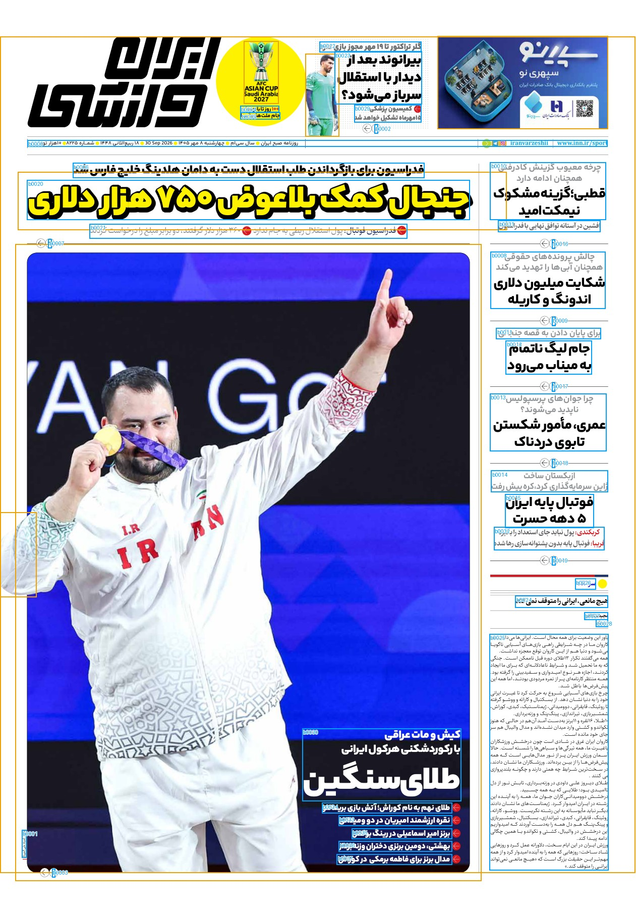
متن: 3,402 نویسه؛ بلوک: 38؛ تصویر: 9
وضعیت اولیه: text_present_needs_gold_check
پوشش تقریبی جعبههای متن: 26.6%
نشانگرها: —
متن خام · بلوکها و مختصات8 صفحه؛ 140,827 نویسه؛ 0 نشانگر ادامه؛ زمان بررسی و خروجی: 17.30 ثانیه؛ RSS نمونهبرداریشده: 179.6 MB
آمار صفحات CSV · تصاویر و DPI · نشانگرها · نمونهٔ رونویسی

متن: 3,402 نویسه؛ بلوک: 38؛ تصویر: 9
وضعیت اولیه: text_present_needs_gold_check
پوشش تقریبی جعبههای متن: 26.6%
نشانگرها: —
متن خام · بلوکها و مختصات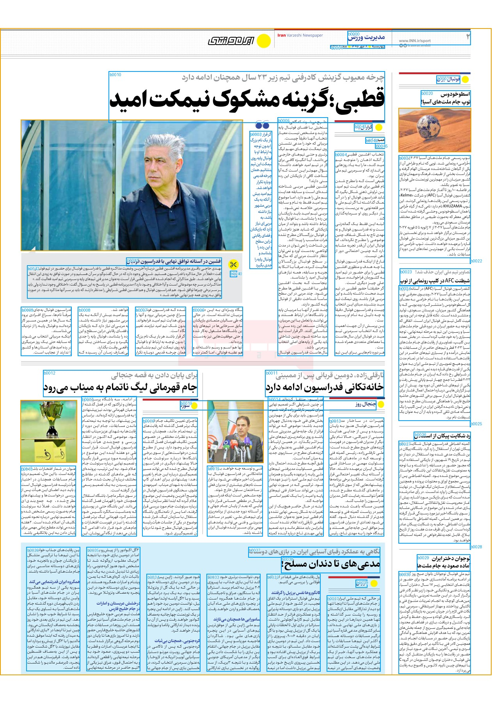
متن: 19,223 نویسه؛ بلوک: 46؛ تصویر: 5
وضعیت اولیه: text_present_needs_gold_check
پوشش تقریبی جعبههای متن: 59.6%
نشانگرها: —
متن خام · بلوکها و مختصات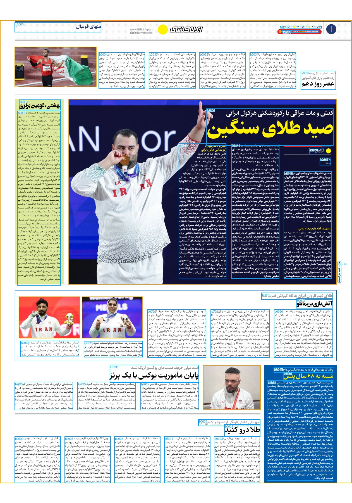
متن: 18,114 نویسه؛ بلوک: 38؛ تصویر: 6
وضعیت اولیه: text_present_needs_gold_check
پوشش تقریبی جعبههای متن: 51.3%
نشانگرها: —
متن خام · بلوکها و مختصات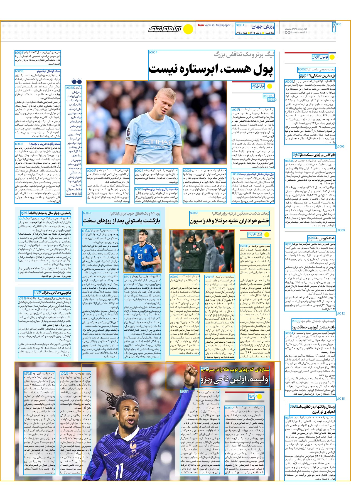
متن: 18,822 نویسه؛ بلوک: 50؛ تصویر: 8
وضعیت اولیه: text_present_needs_gold_check
پوشش تقریبی جعبههای متن: 54.1%
نشانگرها: —
متن خام · بلوکها و مختصات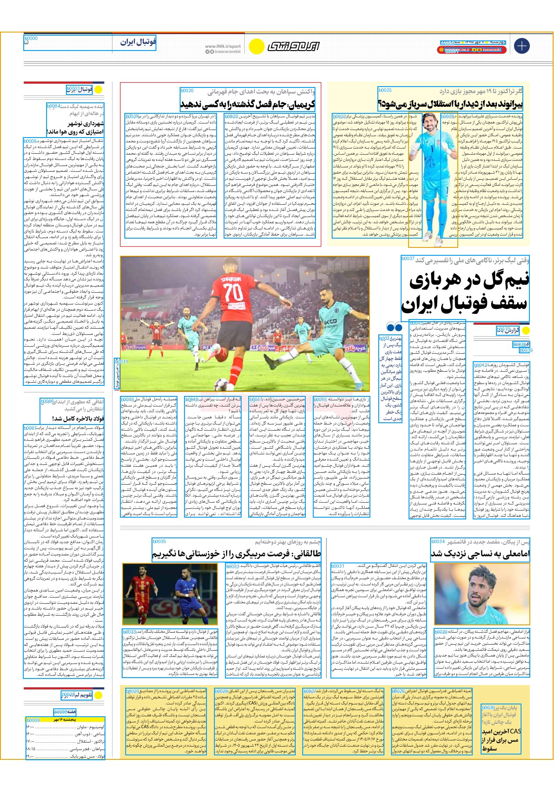
متن: 20,684 نویسه؛ بلوک: 40؛ تصویر: 5
وضعیت اولیه: text_present_needs_gold_check
پوشش تقریبی جعبههای متن: 60.1%
نشانگرها: —
متن خام · بلوکها و مختصات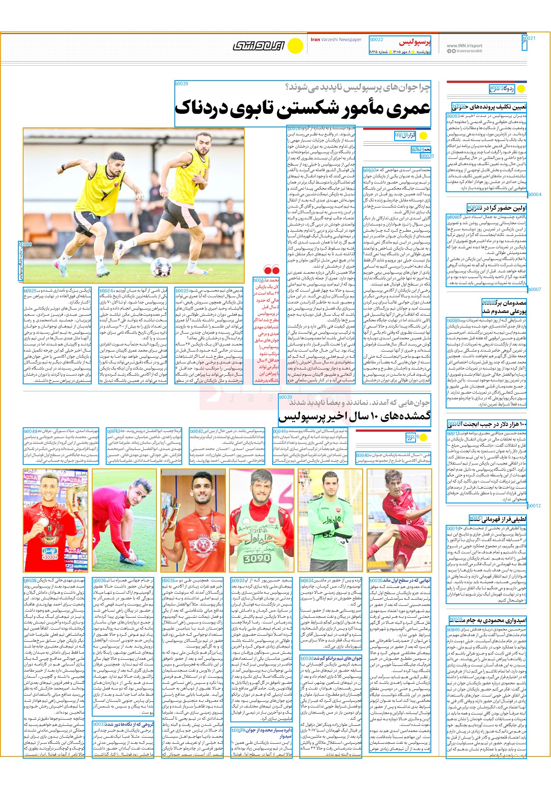
متن: 19,590 نویسه؛ بلوک: 45؛ تصویر: 8
وضعیت اولیه: text_present_needs_gold_check
پوشش تقریبی جعبههای متن: 53.3%
نشانگرها: —
متن خام · بلوکها و مختصات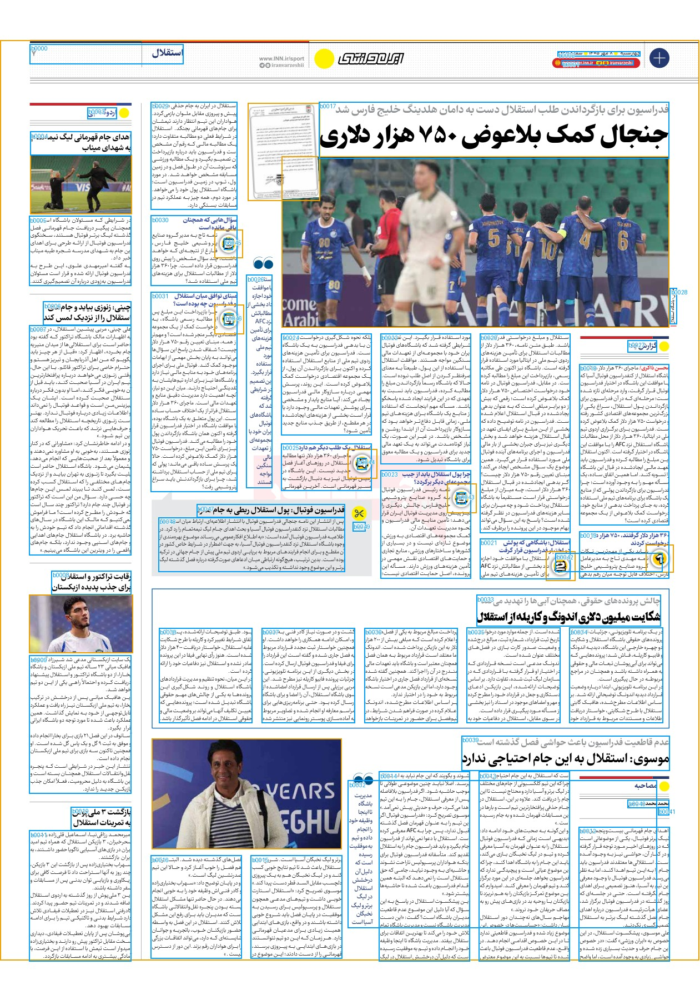
متن: 19,329 نویسه؛ بلوک: 50؛ تصویر: 12
وضعیت اولیه: text_present_needs_gold_check
پوشش تقریبی جعبههای متن: 57.7%
نشانگرها: —
متن خام · بلوکها و مختصات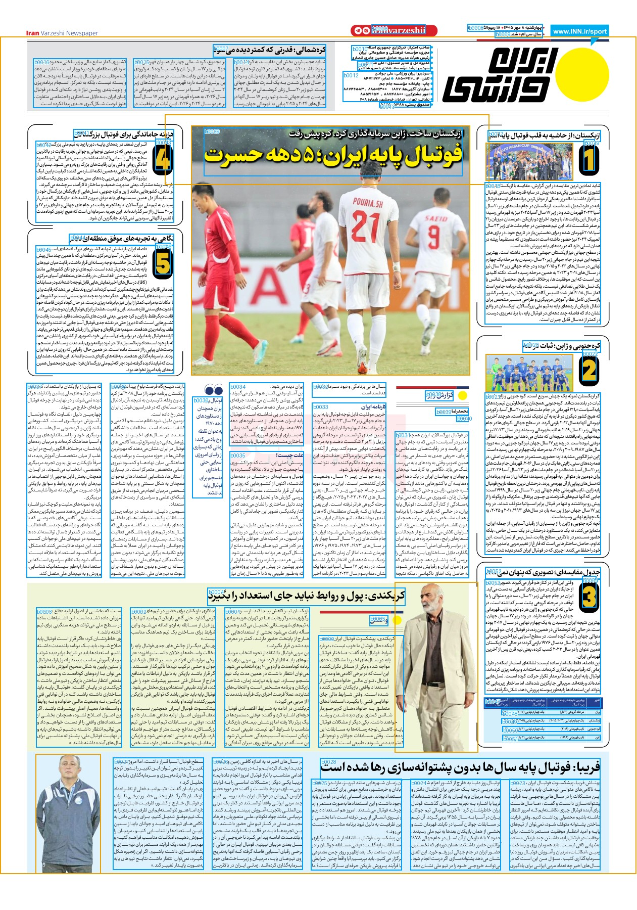
متن: 21,663 نویسه؛ بلوک: 55؛ تصویر: 7
وضعیت اولیه: text_present_needs_gold_check
پوشش تقریبی جعبههای متن: 58.7%
نشانگرها: —
متن خام · بلوکها و مختصات16 صفحه؛ 363,281 نویسه؛ 6 نشانگر ادامه؛ زمان بررسی و خروجی: 36.25 ثانیه؛ RSS نمونهبرداریشده: 290.4 MB
آمار صفحات CSV · تصاویر و DPI · نشانگرها · نمونهٔ رونویسی
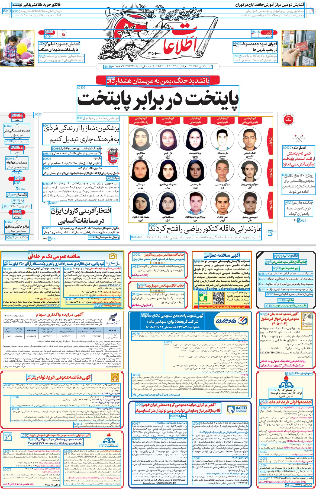
متن: 14,549 نویسه؛ بلوک: 107؛ تصویر: 16
وضعیت اولیه: text_present_needs_gold_check
پوشش تقریبی جعبههای متن: 60.2%
نشانگرها: —
متن خام · بلوکها و مختصات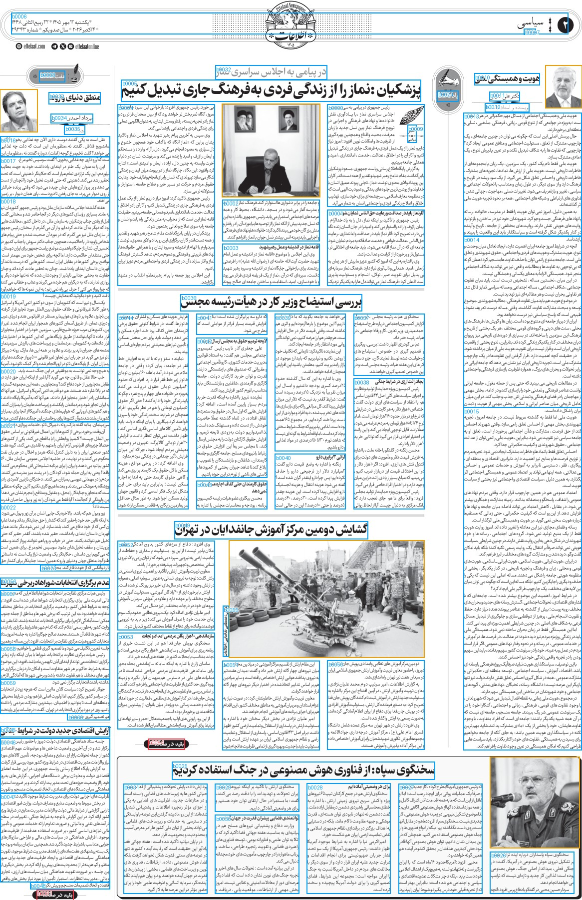
متن: 27,119 نویسه؛ بلوک: 62؛ تصویر: 5
وضعیت اولیه: text_present_needs_gold_check
پوشش تقریبی جعبههای متن: 77.6%
نشانگرها: 1414 بقیه در صفحه
1414 بقیه در صفحه
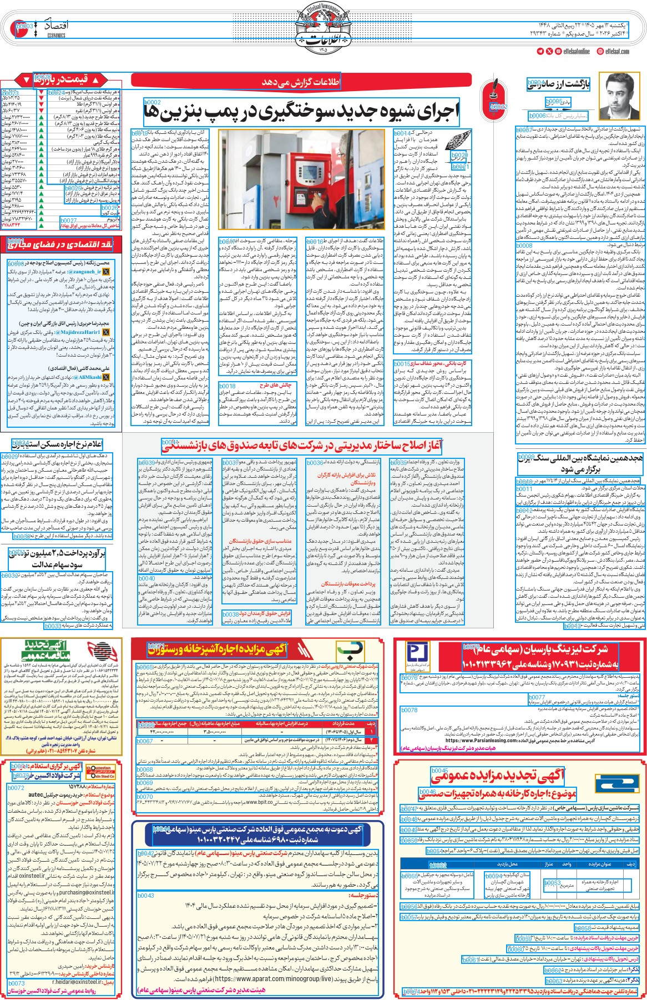
متن: 22,702 نویسه؛ بلوک: 80؛ تصویر: 10
وضعیت اولیه: text_present_needs_gold_check
پوشش تقریبی جعبههای متن: 77.3%
نشانگرها: —
متن خام · بلوکها و مختصات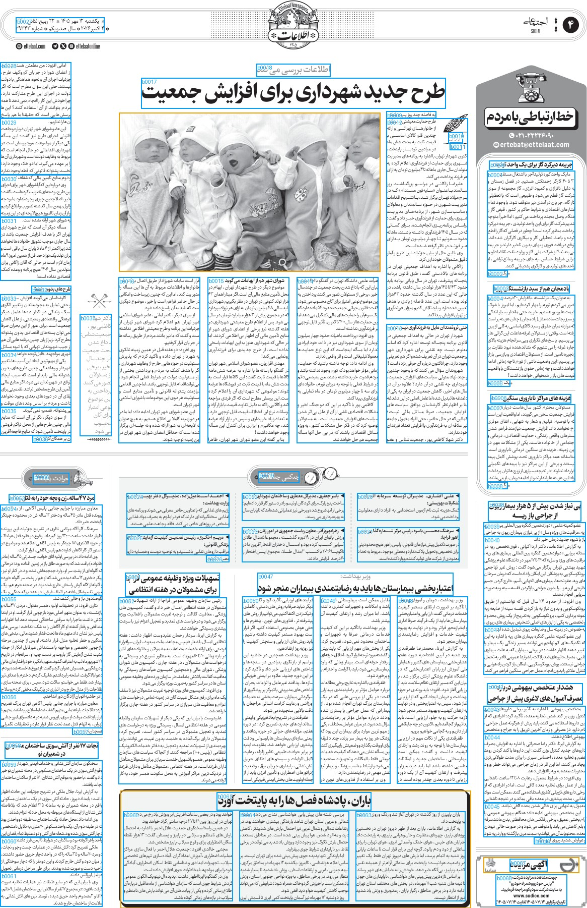
متن: 23,062 نویسه؛ بلوک: 69؛ تصویر: 3
وضعیت اولیه: text_present_needs_gold_check
پوشش تقریبی جعبههای متن: 70.8%
نشانگرها: —
متن خام · بلوکها و مختصات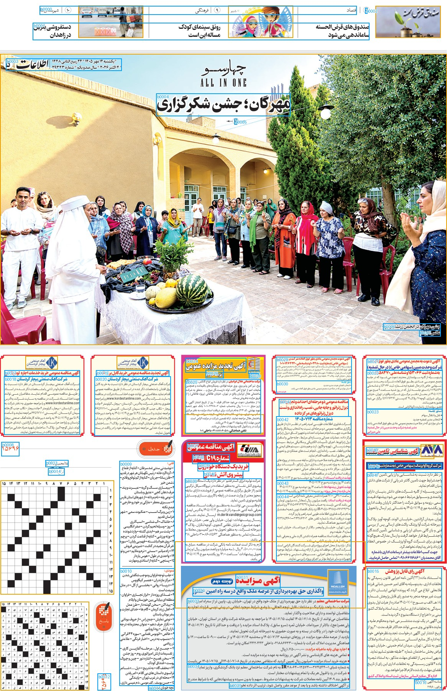
متن: 12,178 نویسه؛ بلوک: 48؛ تصویر: 16
وضعیت اولیه: text_present_needs_gold_check
پوشش تقریبی جعبههای متن: 40.4%
نشانگرها: —
متن خام · بلوکها و مختصات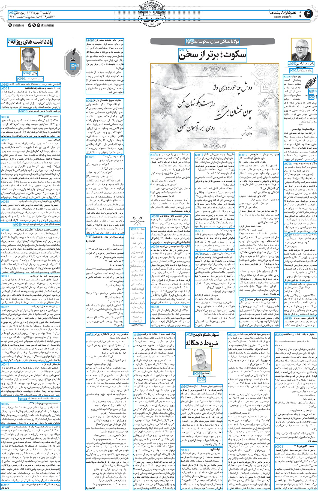
متن: 24,153 نویسه؛ بلوک: 55؛ تصویر: 4
وضعیت اولیه: text_present_needs_gold_check
پوشش تقریبی جعبههای متن: 73.9%
نشانگرها: —
متن خام · بلوکها و مختصات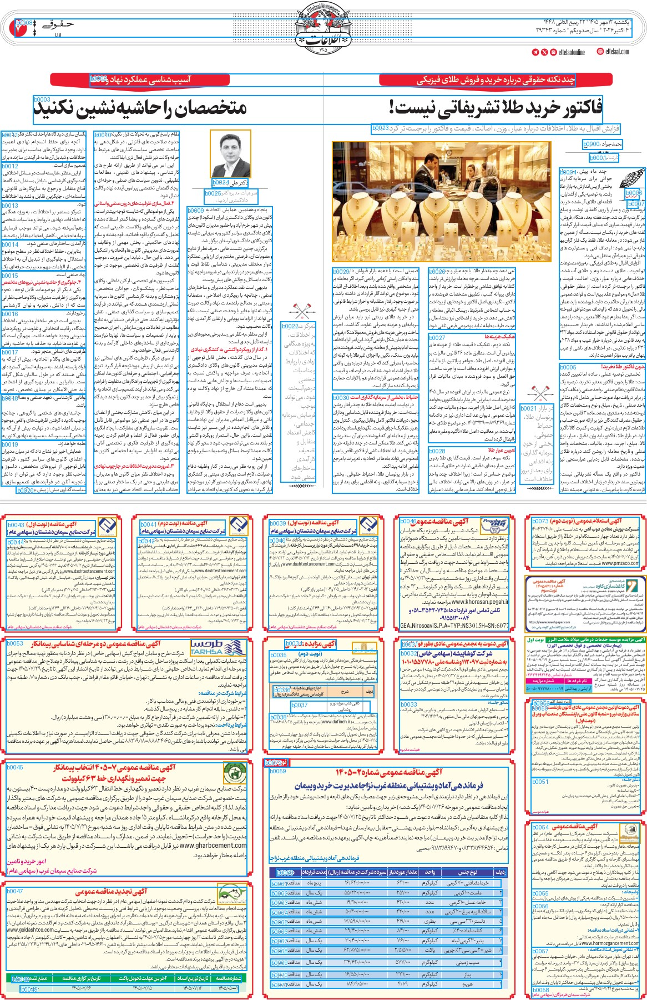
متن: 21,937 نویسه؛ بلوک: 74؛ تصویر: 13
وضعیت اولیه: text_present_needs_gold_check
پوشش تقریبی جعبههای متن: 78.6%
نشانگرها: —
متن خام · بلوکها و مختصات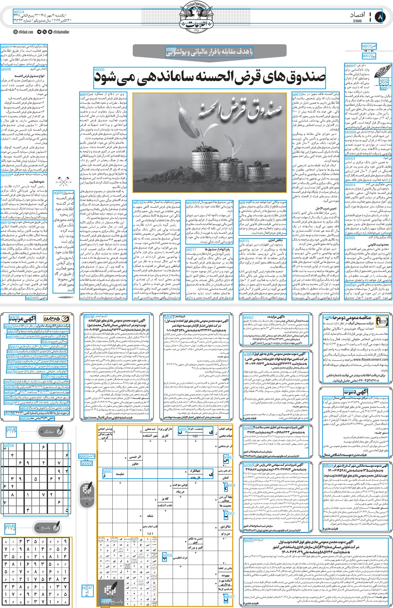
متن: 21,248 نویسه؛ بلوک: 71؛ تصویر: 7
وضعیت اولیه: text_present_needs_gold_check
پوشش تقریبی جعبههای متن: 65.1%
نشانگرها: —
متن خام · بلوکها و مختصات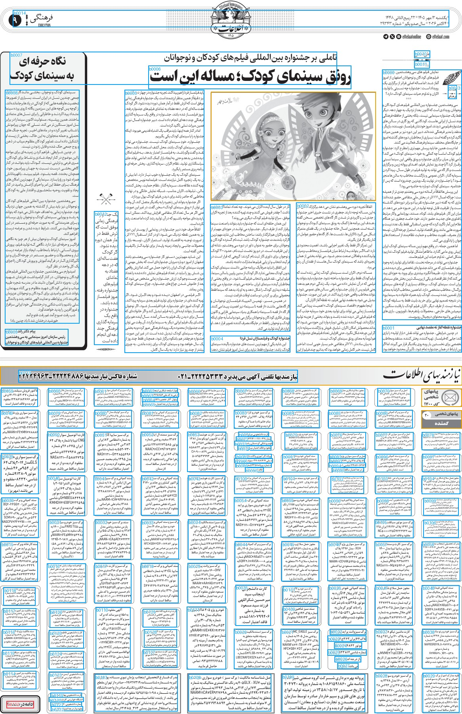
متن: 29,146 نویسه؛ بلوک: 132؛ تصویر: 4
وضعیت اولیه: text_present_needs_gold_check
پوشش تقریبی جعبههای متن: 79.7%
نشانگرها: 11 ادامه در صفحه
متن خام · بلوکها و مختصات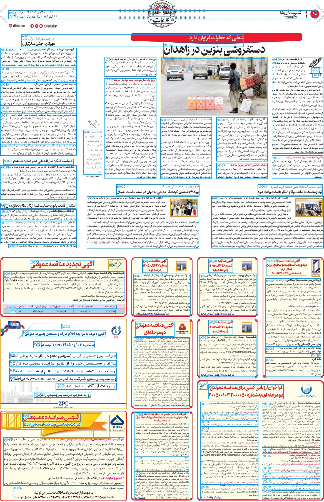
متن: 24,798 نویسه؛ بلوک: 78؛ تصویر: 20
وضعیت اولیه: text_present_needs_gold_check
پوشش تقریبی جعبههای متن: 76.7%
نشانگرها: —
متن خام · بلوکها و مختصات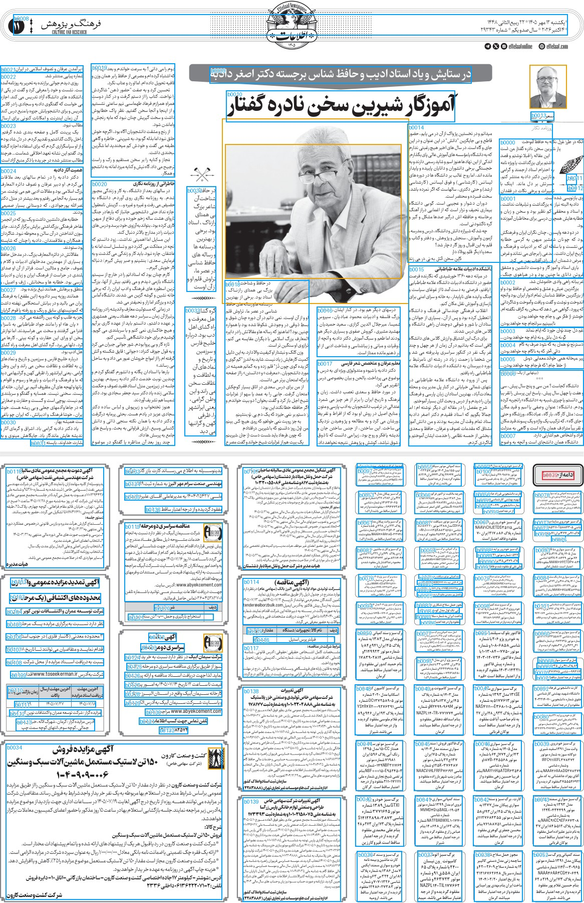
متن: 26,556 نویسه؛ بلوک: 140؛ تصویر: 6
وضعیت اولیه: text_present_needs_gold_check
پوشش تقریبی جعبههای متن: 80.9%
نشانگرها: 9 ادامه از صفحه
متن خام · بلوکها و مختصاتمتن: 21,730 نویسه؛ بلوک: 66؛ تصویر: 12
وضعیت اولیه: text_present_needs_gold_check
پوشش تقریبی جعبههای متن: 73.4%
نشانگرها: —
متن خام · بلوکها و مختصات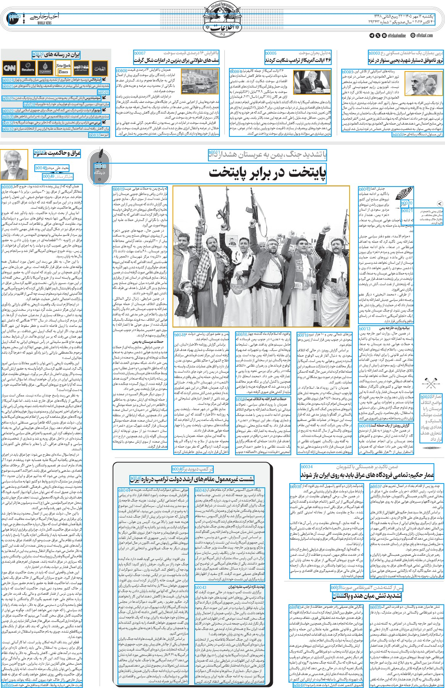
متن: 23,236 نویسه؛ بلوک: 50؛ تصویر: 12
وضعیت اولیه: text_present_needs_gold_check
پوشش تقریبی جعبههای متن: 72.5%
نشانگرها: —
متن خام · بلوکها و مختصات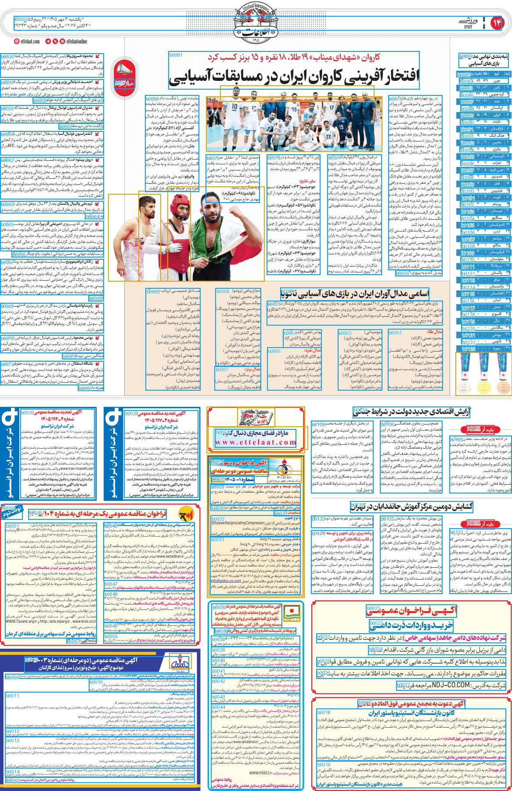
متن: 23,420 نویسه؛ بلوک: 135؛ تصویر: 23
وضعیت اولیه: text_present_needs_gold_check
پوشش تقریبی جعبههای متن: 75.7%
نشانگرها: 2 بقیه از صفحه
2 بقیه از صفحه
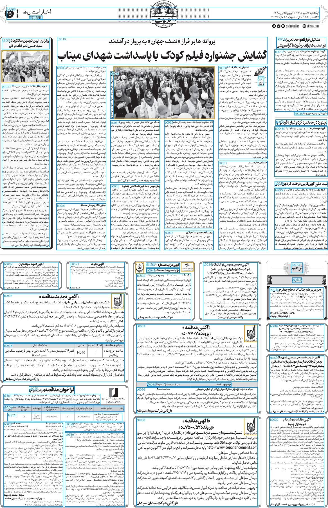
متن: 25,477 نویسه؛ بلوک: 47؛ تصویر: 7
وضعیت اولیه: text_present_needs_gold_check
پوشش تقریبی جعبههای متن: 84.3%
نشانگرها: —
متن خام · بلوکها و مختصات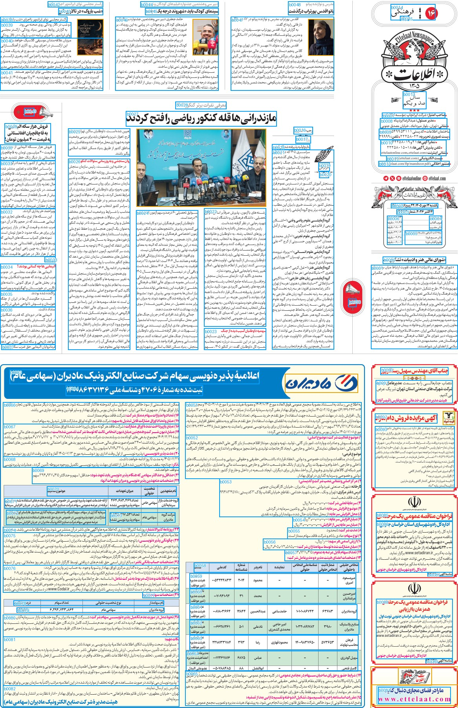
متن: 21,970 نویسه؛ بلوک: 95؛ تصویر: 11
وضعیت اولیه: text_present_needs_gold_check
پوشش تقریبی جعبههای متن: 76.1%
نشانگرها: —
متن خام · بلوکها و مختصات4 صفحه؛ 69,461 نویسه؛ 0 نشانگر ادامه؛ زمان بررسی و خروجی: 5.99 ثانیه؛ RSS نمونهبرداریشده: 346.5 MB
آمار صفحات CSV · تصاویر و DPI · نشانگرها · نمونهٔ رونویسی
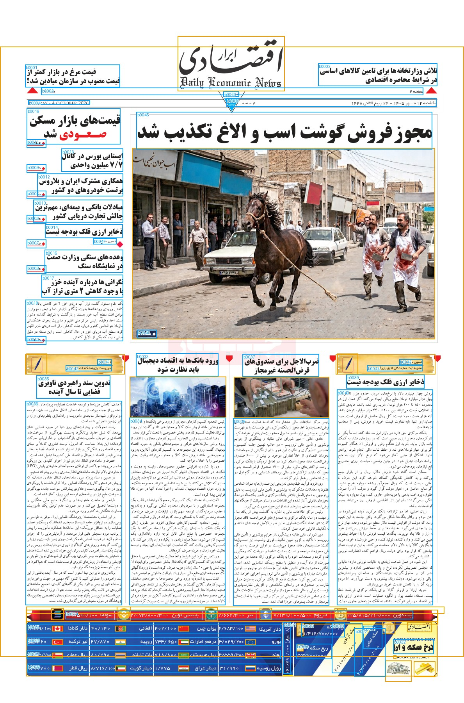
متن: 10,545 نویسه؛ بلوک: 48؛ تصویر: 42
وضعیت اولیه: text_present_needs_gold_check
پوشش تقریبی جعبههای متن: 51.5%
نشانگرها: —
متن خام · بلوکها و مختصات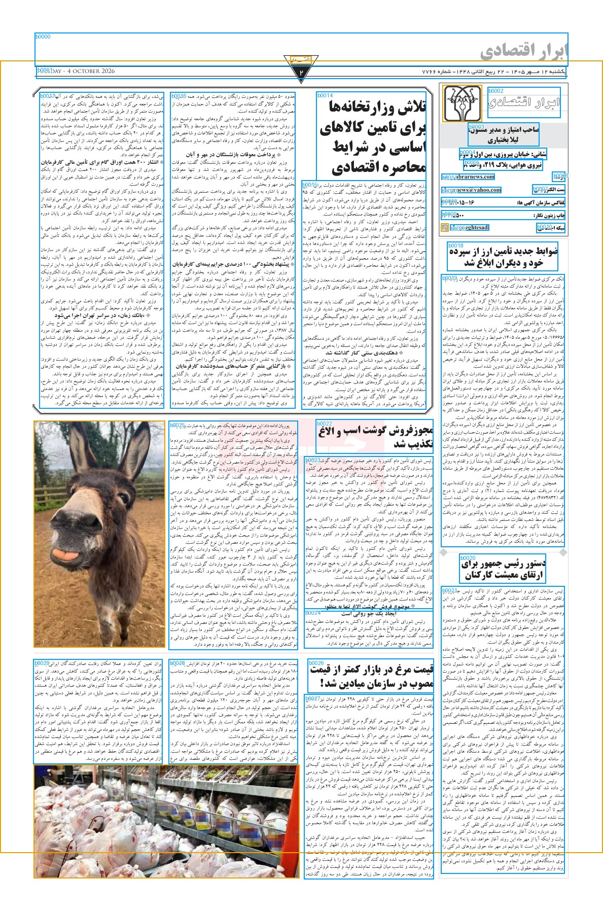
متن: 18,518 نویسه؛ بلوک: 30؛ تصویر: 6
وضعیت اولیه: text_present_needs_gold_check
پوشش تقریبی جعبههای متن: 67.6%
نشانگرها: —
متن خام · بلوکها و مختصات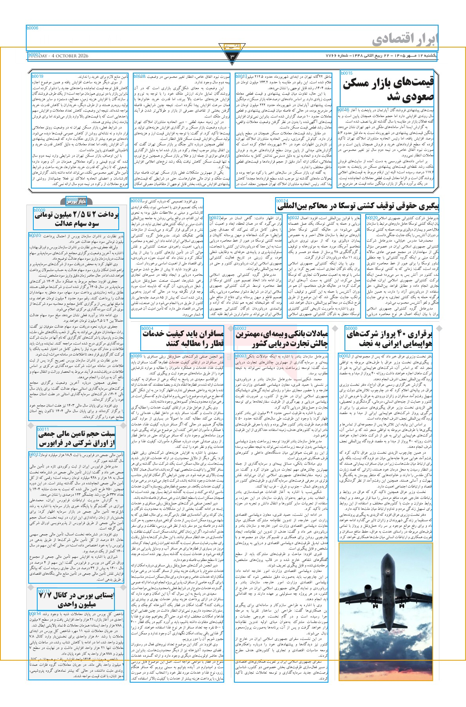
متن: 20,509 نویسه؛ بلوک: 25؛ تصویر: 3
وضعیت اولیه: text_present_needs_gold_check
پوشش تقریبی جعبههای متن: 75.4%
نشانگرها: —
متن خام · بلوکها و مختصات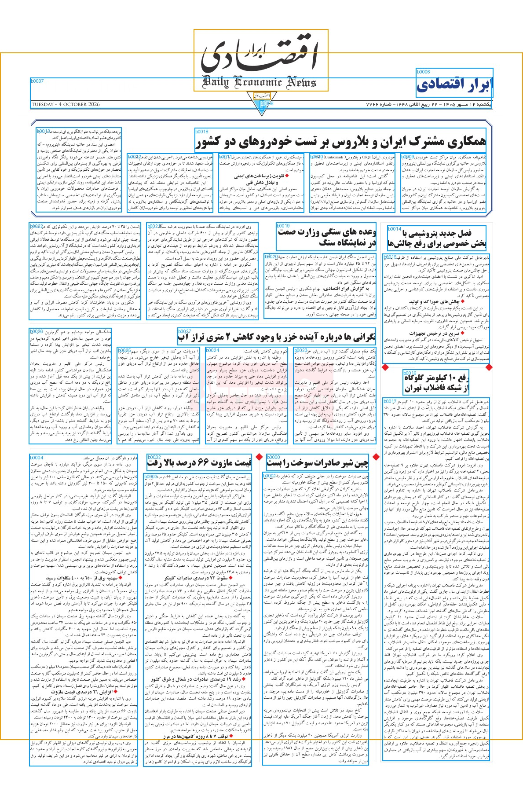
متن: 19,889 نویسه؛ بلوک: 28؛ تصویر: 3
وضعیت اولیه: text_present_needs_gold_check
پوشش تقریبی جعبههای متن: 73.2%
نشانگرها: —
متن خام · بلوکها و مختصات{
"timestamp_utc": "2026-10-07T16:22:20Z",
"python": "3.13.5",
"platform": "Windows-10-10.0.19045-SP0",
"processor": "Intel64 Family 6 Model 78 Stepping 3, GenuineIntel",
"physical_cores": 2,
"logical_cores": 4,
"ram_gb": 3.877574920654297,
"pymupdf": "1.27.2.2",
"psutil": "7.2.2",
"configuration": {
"command": "analyze",
"pdfs": [
"C:\\Users\\Mandish\\Desktop\\1-7.pdf",
"C:\\Users\\Mandish\\Desktop\\1-8.pdf",
"C:\\Users\\Mandish\\Desktop\\1-9.pdf"
],
"output": "outputs",
"page_map": null,
"render_max_edge": 1800,
"crop_dpi": 200,
"sample_lines": 5,
"seed": 16,
"no_render": false
},
"coordinate_system": "PDF points, unrotated page, top-left origin; 72 pt/inch",
"memory_sampling_interval_seconds": 0.05
}